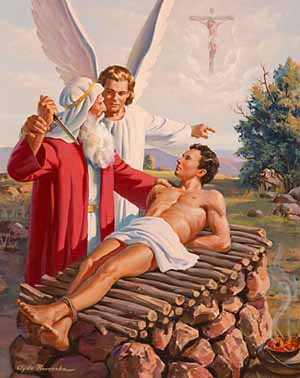

Home Quiz
Shadowland: Beginnings: Week 27
Ishmael as a type of Israel
- Ishmael was birthed by Hagar the Egyptian, and the nation of Israel
was birthed in Egypt.
- Ishmael was Abraham's seed according to the flesh. Galatians 4:23
Israel was Abraham's seed according to the flesh. Romans 4:1
- Ishmael was cast out after rejecting the child of promise. Israel
was cast out of the Land after rejecting the Child of Promise.
- As the water was used up, so the Holy Spirit was withdrawn from Israel
Ezekiel 11:22-23 - concerning which Eusebius writes in
Demonstratio Evangelica, Book VI, Chapter 18 "Which it is possible
for us to see literally fulfilled in another way even to-day, since
believers in Christ all congregate from all parts of the world, not as
of old time because of the glory of Jerusalem, nor that they may
worship in the ancient Temple at Jerusalem, but they rest there that
they may learn both about the city being taken and devastated as the
prophets foretold, and that they may worship at the Mount of Olives
opposite to the city, whither the glory of the Lord migrated when it
left the former city."
- When Ishmael cried out to God, God provided water. When Israel
mourns for him whom they have pierced and says "Blessed is he who comes
in the name of the Lord" (Matthew 23:35) - then the Holy Spirit will
be restored to Israel. Zechariah 12:10
- As Ishmael took a wife from Egypt, so in the Last Days, Israel
will ally with Egypt. Isaiah 19:22-25
- As Ishmael begats twelve princes, so the twelve tribes of Israel
will be restored in the millenium.
- As Ishmael dwelt in Paran - which in Hebrew is "beautiful" or "glorious",
so Israel will dwell in the promised Land, restored from the
curse on the ground.
Genesis 22
"God tested Abraham" - the culmination of all the testing in previous chapters.
Here God reveals that while no Son of Adam will do, ultimately a human
sacrifice is required for human sin.

Isaac as a type of Christ
- 22:2 "thine only son" - God gave his only begotten son. John 3:16
God spared not his own son. Romans 8:32
- 22:3 "rose early in the morning" - Abraham has learned to obey
quickly, and this also suggests Christ "slain before the foundation
of the world". (1 Peter 1:20, Revelation 13:8)
- 22:4 "and saw the place afar off" - "Your father Abraham rejoiced
to see my day." John 8:56
"on the third day" - Abraham receives Isaac from the dead
in a figure on the third day. Hebrews 11:19 Christ
rose from the dead on the third day.
- 22:5 "the lad" - the same word used of a young man old enough for war.
I.e. not a child, but a young man who could have easily resisted his
father. Yet he meekly submitted to the will of his father. He is 36
at the death of Sarah. He was likely around 32 or 33 here.
"And come again together" - God had promised descendents as
the stars through Isaac, so Abraham knew that God would have to raise
Isaac from the dead. Hebrews 11:17-19
- 22:6 "and they went together" - implies agreement, as in "Let us exalt his
name together." Psalm 34:4 Christ was in agreement with
the Father.
- 22:7 Isaac questions what must be done. Christ questions the necessity
of what must be done. "If it be possible, take this cup from me."
- 22:8 But they are still in agreement - "not my will, but thine be done."
- 22:9 Isaac was laid upon the wood, as was Christ upon the cross.
- 22:14 "The mount of the Lord" - in case you had any doubt this was
the very mount on which Christ was crucified.
Newsletter from the Relatives 22:20-24
- 22:23 The birth of Rebecca.